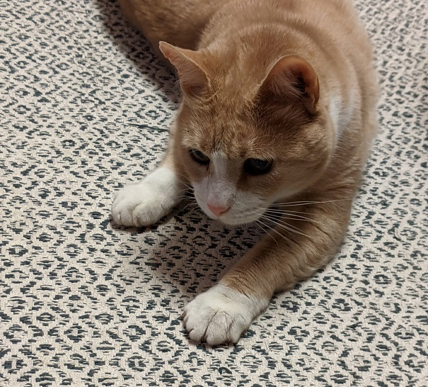

<!DOCTYPE html>
<html lang="fr"></html>
    <head>
        <!--Contient les metadonnées (nécessaire mais pas à afficher) -->
        <meta charset="UTF-8">
        <title>Exercice HTML</title>
    </head>
    <body>  <!--Contient tout ce qu'on veut afficher -->
        <div>   <!--Permet de diviser et faire un bloc/Conteneur-->
            <h1>Titre</h1>
            <p>Blablabla</p>
        </div>

        <header></header>   <!--balises div avec nom particulier-->
        <main></main>
        <footer></footer>


        <br/>
        <a href="page.html">lien</a>
    </body>
</html>

<!-- div/conteneurs avec noms particuliers -->
<article></article>
<section></section>
<aside></aside>
<nav></nav>

<!-- Les flex box
* le parent direct doit être en display: flex
* justify-content: aligne le contenu sur l'axe horizontal (gauche, droite, centre, justifié)
* align-content : disposer le contenu dans l'axe vertical flex-start/end  etc...-->

<!-- RACCOURCIS VS CODE
*** a[href=blablabla]{Texte}-->
<a href="blabla"></a>
<a href="blablbablabla">Un deux trois</a>

<!-- div>ul>li.vert*3 -->
<div>
    <ul>
        <li class="vert"></li>
        <li class="vert"></li>
        <li class="vert"></li>
    </ul>
</div>

<!-- header+div>p#bleu*3 -->
<header></header>
<div>
    <p id="bleu"></p>
    <p id="bleu"></p>
    <p id="bleu"></p>
</div>

<!-- table>tr*5>td*2 -->
<table>
    <tr>
        <td></td>
        <td></td>
    </tr>
    <tr>
        <td></td>
        <td></td>
    </tr>
    <tr>
        <td></td>
        <td></td>
    </tr>
    <tr>
        <td></td>
        <td></td>
    </tr>
    <tr>
        <td></td>
        <td></td>
    </tr>
</table>

<!-- RACCOURCIS :

* CURSEUR & SELECTEUR :
- Alt + curseur : dupliquer curseur
- Alt + Shift + flèche : dupliquer
- Cmd + D : select mot entier en un clic + suites de caract. similaires
- Alt + flèche haut bas : décaler lignes selectionnées 

* INTENTATION
- Shift + Tab retour arrière intentation
- CTRL + SHIFT + (I pour mac) F pour windows : auto intentation 

* AUTRE :
- Alt + Z : faire revenir à la ligne les passages qui dépassent de la page

-->